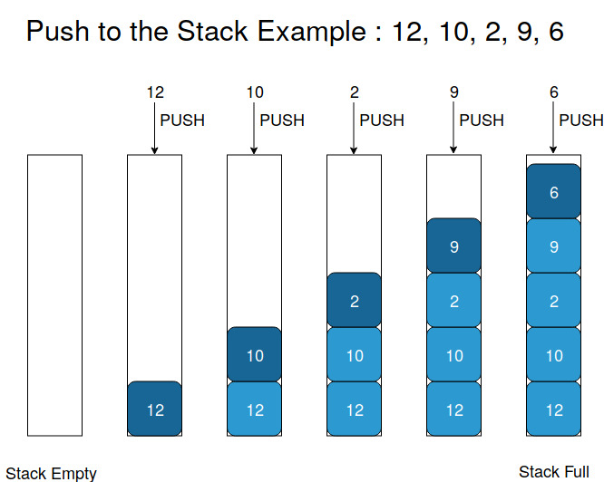
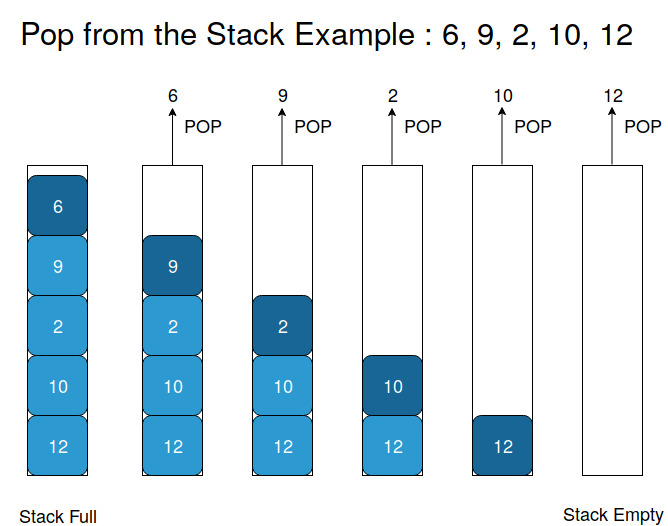
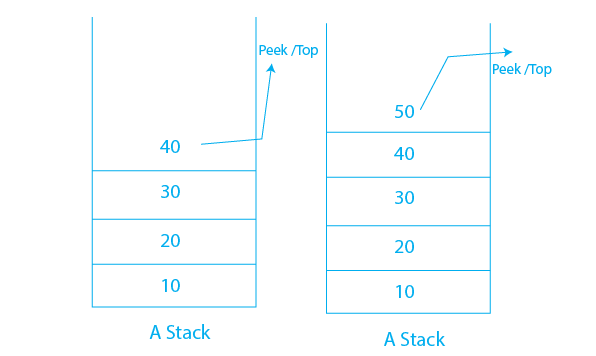

Stack
What is a Stack?
A stack is a linear data structure that follows the Last-In-First-Out (LIFO) principle, meaning that the last element added to the stack is the first one to be removed. You can think of a stack as a collection of items arranged like a stack of plates: you can only add or remove the top plate.Key Characteristics:
1.LIFO Structure: The last item added is the first one removed.
2.Dynamic Size: A stack can grow or shrink in size as elements are added or removed.
3.Limited Access: Only the top element is accessible at any time; you can't access elements deeper in the stack without removing the top elements first.
Basic Operations:
Push: Adds an element to the top of the stack.
Pop: Removes and returns the element from the top of the stack.
Peek/Top: Returns the top element without removing it. isEmpty: Checks if the stack is empty.
Stack Operations in Detail:
1.Push()
i.Purpose: Adds an element to the top of the stack.
ii.Characteristics: 1.Follows the Last In, First Out (LIFO) principle.
2.The stack size increases by one with each push.
iii.Efficiency: The operation is very fast, with a time complexity of O(1) (constant time).

2.Pop()
i.Purpose: Removes and returns the element at the top of the stack.
ii.Characteristics: 1.Follows the Last In, First Out (LIFO) principle.
2.Decreases the stack size by one.
iii.Efficiency:O(1), meaning it takes constant time regardless of the stack size.

3.Peek()
i.Purpose: Returns the element at the top of the stack without removing it.
ii.Characteristics: 1.Allows you to view the top element while keeping the stack intact.
2.Does not change the stack size.
iii.Efficiency: O(1), as it retrieves the top element directly.
